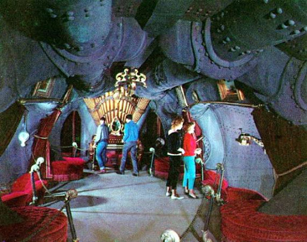
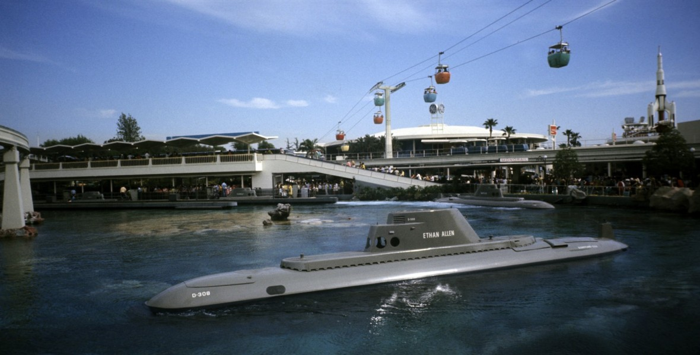
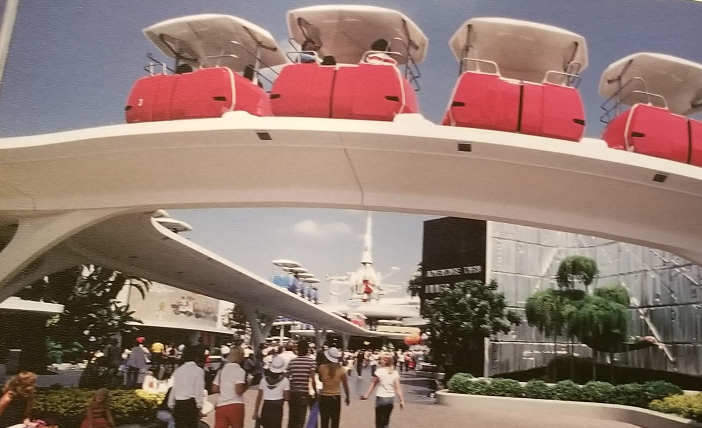

The PeopleMover, sometimes referred to as the Goodyear PeopleMover and WEDWay PeopleMover, was a transport attraction that opened on July 2, 1967. Guests boarded small trains that ran on elevated tracks for a "grand circle tour" above Tomorrowland. The term "people mover," now in wider use to describe many forms of automated public transport, was first coined as the name for this attraction. PeopleMover was originally only a working title, but became attached to the project over time.
The PeopleMover closed in August 1995 since Imagineers thought the ride was past its time and no longer a prototype, but rather a place to rest one's feet and also as part of Michael Eisner and Paul Pressler's program to save money by shutting down expensive and classic attractions. Also multiple people died on this ride which isn't great when it comes to the desirability of the ride.

The 20,000 Leagues Under The Sea Exhibit opened with Disneyland in 1955. It was never meant to be a permanent fixture of the park, installed mere weeks before the parks opening. Inspiration was taken from the 1954 film of the same name. The walkthrough exhibit took guests right into the underwater world of the film.
By the 1960s, Tomorrowland had begun its first of many massive renovation and expansion projects, in an attempt to keep up with constantly changing technology and what the public perceived as “futuristic”. The exhibit closed its doors in 1966, to make way for new, larger rides like Adventure Thru Inner Space.
The organ from the ride can now be seen in the grand ballroom of the Huanted Mansion.
The Submarine Voyage featured vehicles designed to resemble submarines. It first opened on June 14, 1959, as one of the first rides to require an E ticket. The ride began with the sub diving into the depths of the Lagoon, where guests saw various sea creatures. Examples of these forms of life included giant sea bass, sea turtles, fighting lobsters, giant clams, thousands of algae, and a shark fighting an octopus. Traversing an underwater story, ending with subs entering a dark-ride portion and then returning to port.
On September 9, 1998, the Submarine Voyage was closed due to its age, low hourly capacity, aged effects, and high maintenance and labor costs. Then-president of Disneyland, Paul Pressler, promised a new attraction in 2003. Although, this never happened.